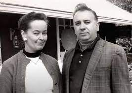

La Familia Warren
Los profesionales de lo paranormal
Ed y Lorraine Warren fueron dos investigadores estadounidenses de fenómenos paranormales. Ed Warren fue un demonólogo y autor de varios libros. Lorraine Warren fue una médium y clarividente y junto con su esposo eran dueños del Museo del Ocultismo que se encuentra en Connecticut.

- Libro:Cazadores de fantasmas, escrito por Ed Warren en 1980.
- Caso: La muñeca Anabelle, 1968.
- Caso: La Familia Perron, 1971.
- Caso: Terror En Amityville, 1976.
- Caso: La aparición de Connecticut, 1986.
- Nombre: Edward Warren Miney.
- Edad: 79 Años.
- Nacimiento: 7 de Septiembre de 1926.
- Fallecimiento: 23 de Agosto de 2006.
- Nacionalidad: Estaunidense.
- Ocupación: Demonólogo.
- Nombre: Lorraine Rita Moran.
- Edad: 92 Años.
- Nacimiento: 31 de Septiembre de 1927.
- Fallecimiento: 18 de Abril de 2019.
- Nacionalidad: Estaunidense.
- Ocupación: Clarividente y médium.
Ir al formulario